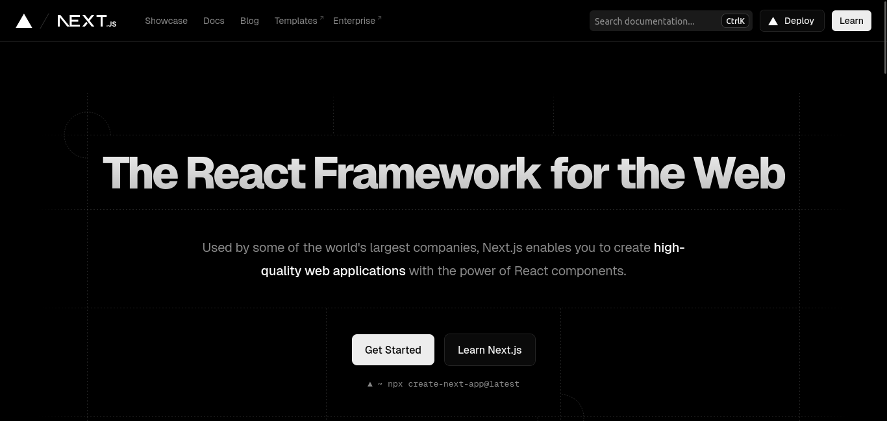
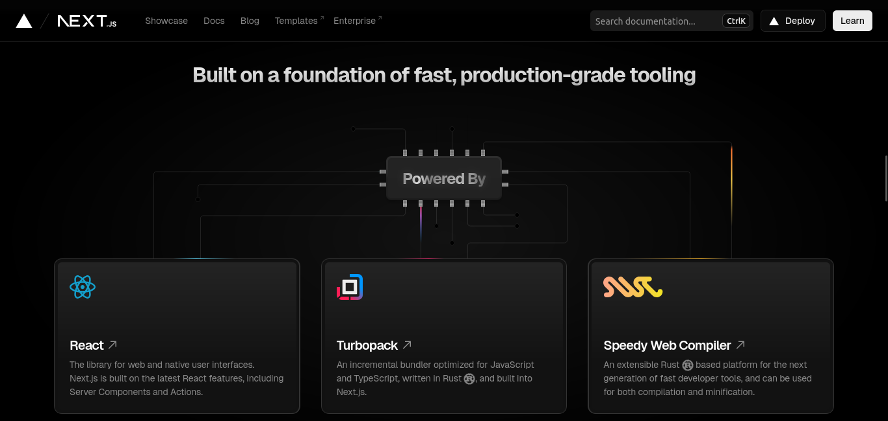

Hey , Here I will tell you guys how to Setup a Nextjs .
Its an awesome framework , it make interacting with react features much easier
Its a very quick no gonna lie . On production it loads like rocket .
Its server is backend is literally good , If you don't know much about backend development , still you can
code in here .


What is Next.js?
Next.js is a React framework for building full-stack web applications. You use React Components to build
user interfaces, and Next.js for additional features and optimizations.
It also automatically configures lower-level tools like bundlers and compilers. You can instead focus on
building your product and shipping quickly.
Whether you're an individual developer or part of a larger team, Next.js can help you build interactive,
dynamic, and fast React applications.
App Router and Pages Router
Next.js has two different routers:
App Router: The newer router that supports new React features like Server Components.
Pages Router: The original router, still supported and being improved.
At the top of the sidebar, you'll notice a dropdown menu that allows you to switch between the App Router
and the Pages Router docs.
Now we will hop into actual installation
Installation
Before you begin, make sure your system meets the following requirements:
Node.js 18.18
or later.
macOS, Windows (including WSL), or Linux.
The quickest way to create a new Next.js app is using create-next-app, which sets up everything
automatically for you. To create a project, run:
npx create-next-app@latest
On installation, you'll see the following prompts:
What is your project named? my-app
Would you like to use TypeScript? No / Yes
Would you like to use ESLint? No / Yes
Would you like to use Tailwind CSS? No / Yes
Would you like your code inside a `src/` directory? No / Yes
Would you like to use App Router? (recommended) No / Yes
Would you like to use Turbopack for `next dev`? No / Yes
Would you like to customize the import alias (`@/*` by default)? No / Yes
What import alias would you like configured? @/*
After the prompts, create-next-app will create a folder with your project name and install the required dependencies.